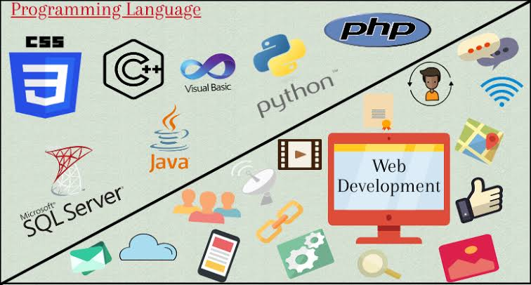

Web development is the work involved in developing a website for the Internet (World Wide Web) or an intranet (a private network).[1] Web development can range from developing a simple single static page of plain text to complex web applications, electronic businesses, and social network services. A more comprehensive list of tasks to which
Web development is the work involved in developing a website for the Internet (World Wide Web) or an intranet (a private network).[1] Web development can range from developing a simple single static page of plain text to complex web applications, electronic businesses, and social network services. A more comprehensive list of tasks to which Web development commonly refers, may include Web engineering, Web design, Web content development, client liaison, client-side/server-side scripting, Web server and network security configuration, and e-commerce development. Among Web professionals, "Web development" usually refers to the main non-design aspects of building Web sites: writing markup and coding.[2] Web development may use content management systems (CMS) to make content changes easier and available with basic technical skills. For larger organizations and businesses, Web development teams can consist of hundreds of people (Web developers) and follow standard methods like Agile methodologies while developing Web sites.[1] Smaller organizations may only require a single permanent or contracting developer, or secondary assignment to related job positions such as a graphic designer or information systems technician. Web development may be a collaborative effort between departments rather than the domain of a designated department. There are three kinds of Web developer specialization: front-end developer, back-end developer, and full-stack developer.[3] Front-end developers are responsible for behavior and visuals that run in the user browser, while back-end developers deal with the servers.[4] Since the commercialization of the Web, the industry has boomed and has become one of the most used technologies ever.

Web development is the work involved in developing a website for the Internet (World Wide Web) or an intranet (a private network).[1] Web development can range from developing a simple single static page of plain text to complex web applications, electronic businesses, and social network services. A more comprehensive list of tasks to which
Debra Howcraft and John Carroll proposed a methodology in which web development process can be divided into sequential steps. They mentioned different aspects of analysis.[17] Phase one involves crafting a web strategy and analyzing how a website can effectively achieve its goals. Keil et al.'s research[18] identifies the primary reasons for software project failures as a lack of top management commitment and misunderstandings of system requirements. To mitigate these risks, Phase One establishes strategic goals and objectives, designing a system to fulfill them. The decision to establish a web presence should ideally align with the organization's corporate information strategy. The analysis phase can be divided into 3 steps: Development of a web strategy Defining objectives Objective analysis During this phase, the previously outlined objectives and available resources undergo analysis to determine their feasibility. This analysis is divided into six tasks, as follows: Technology analysis: Identification of all necessary technological components and tools for constructing, hosting, and supporting the site. Information analysis: Identification of user-required information, whether static (web page) or dynamic (pulled "live" from a database server). Skills analysis: Identification of the diverse skill sets necessary to complete the project. User analysis: Identification of all intended users of the site, a more intricate process due to the varied range of users and technologies they may use. Cost analysis: Estimation of the development cost for the site or an evaluation of what is achievable within a predefined budget. Risk analysis: Examination of any major risks associated with site development. Following this analysis, a more refined set of objectives is documented. Objectives that cannot be presently fulfilled are recorded in a Wish List, constituting part of the Objectives Document. This documentation becomes integral to the iterative process during the subsequent cycle of the methodology.[17] Planning: sitemap and wireframe It is crucial for web developers to be engaged in formulating a plan and determining the optimal architecture and selecting the frameworks.[citation needed] Additionally, developers/consultants play a role in elucidating the total cost of ownership associated with supporting a website, which may surpass the initial development expenses. Key aspects in this step are: Sitemap creation Wireframe creation Tech stack Design and layout Following the analysis phase, the development process moves on to the design phase, which is guided by the objectives document. Recognizing the incremental growth of websites and the potential lack of good design architecture, the methodology includes iteration to account for changes and additions over the life of the site. The design phase, which is divided into Information Design and Graphic Design, results in a detailed Design Document that details the structure of the website, database data structures, and CGI scripts.* The following step, design testing, focuses on early, low-cost testing to identify inconsistencies or flaws in the design. This entails comparing the website's design to the goals and objectives outlined in the first three steps. Phases One and Two involve an iterative loop in which objectives in the Objectives Document are revisited to ensure alignment with the design. Any objectives that are removed are added to the Wish List for future consideration.[17]